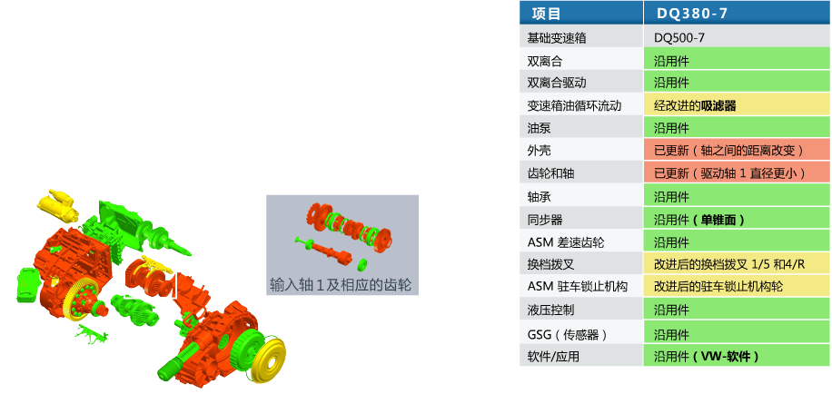

DQ380与DQ500的区别
在 DQ380之前，除DQ200和DQ250外，大众DSG家族中还有一款更强大的DQ500。DQ500于2009年正式推出，主要用于进口车型，是一款吸取DQ250设计经验后开发的7速湿式双离合变速箱，横置发动机，最大承受600NM扭矩。在尺寸控制方面，通过离合器模块和齿轮箱的整体结构优化，DQ500比同样结构的6速DQ250变速箱缩短了8mm。DQ380正是基于DQ500开发而来，沿用件比例达到 70%。
下图为DQ380的机械结构，我们用三种颜色做了标注，以便于分辨DQ380与DQ500的不同区域，具体信息你可以查看右侧的表格。

ASM - 锥齿轮差速器总成
GSG - 变速箱控制单元